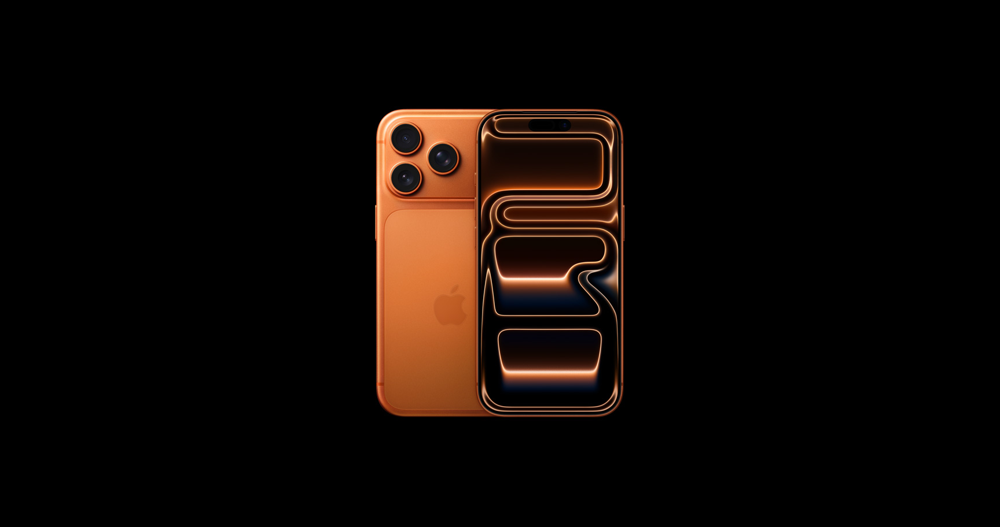
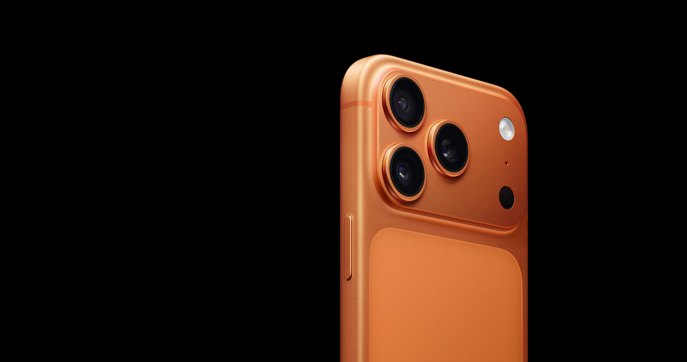
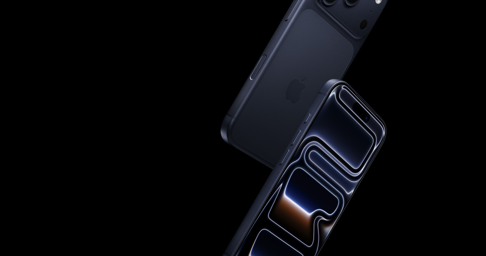
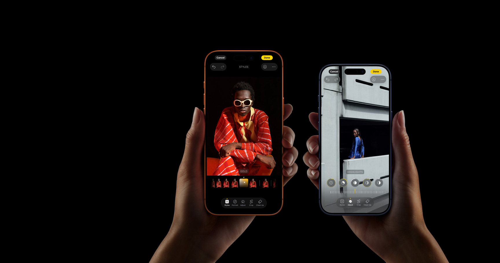
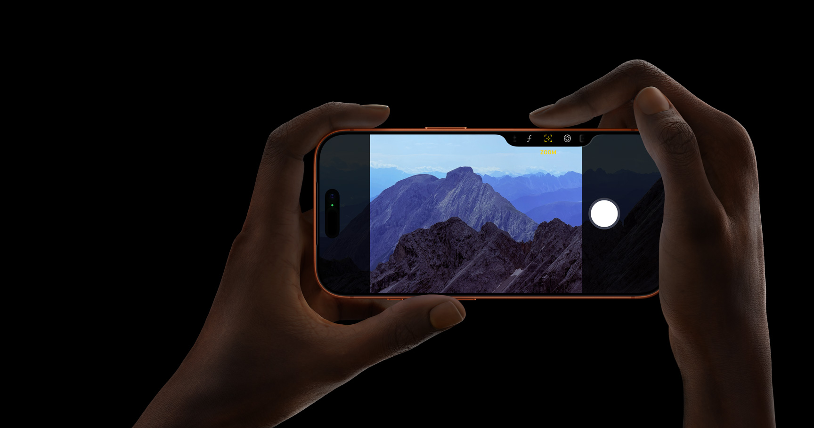
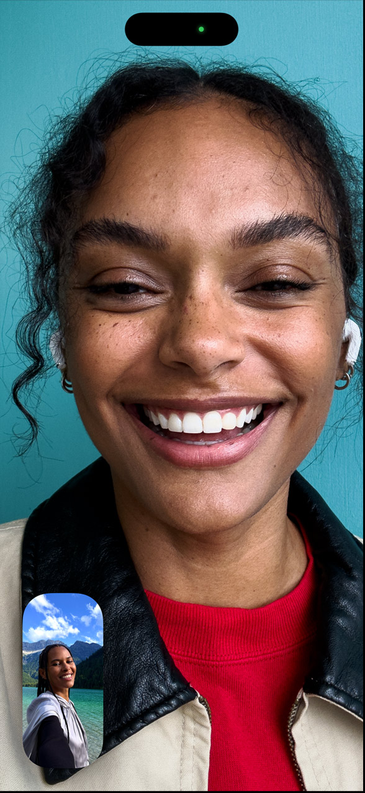

Heat-forged aluminum unibody design for exceptional pro capability.

From $1099 or $45.79/mo. for 24 mo.*
Lease from $31.99 for 24 mo. with Apple Upgrade°
Heat-forged aluminum unibody design for exceptional pro capability.

A19 Pro, vapor cooled for lightning-fast performance. Breakthrough battery life.

The ultimate pro camera system. All 48MP Fusion rear cameras. And the longest zoom ever on an iPhone.

New Center Stage front camera. Flexible ways to frame your shot. Smarter group selfies. And so much more.

iOS 26. New look. Even more magic.

Apple Intelligence. Effortlessly helpful features — from image creation to Live Translation.
Design
Introducing iPhone 17 Pro and iPhone 17 Pro Max, designed from the inside out to be the most powerful iPhone models ever made. At the core of the new design is a heat-forged aluminum unibody enclosure that maximizes performance, battery capacity, and durability.





Cosmic Orange
Colors. Choose from three bold finishes. iPhone 17 Pro shown in Cosmic Orange.
Aluminum unibody. Optimized for performance and battery. Aluminum alloy is remarkably light and has exceptional thermal conductivity.
Vapor chamber. Deionized water sealed inside moves heat away from the A19 Pro chip, allowing for even higher sustained performance.
Ceramic Shield. Protects the back of iPhone 17 Pro, making it 4x more resistant to cracks. New Ceramic Shield 2 on the front has 3x better scratch resistance.
Immersive pro display. Our best-ever 6.3-inch and 6.9-inch Super Retina XDR displays. Brighter. Better anti-reflection. ProMotion up to 120Hz.
Camera Control. Instantly take a photo, record video, adjust settings, and more. So you never miss a moment.
Action button. A customizable fast track to your favorite feature. Long press to launch the action you want — Silent mode, Translation, Shortcuts, and more.
Cameras
Across the iPhone 17 Pro camera system, you’ll find innovation that goes to great lengths. The telephoto features the next generation of our tetraprism design and a 56 percent larger sensor. With an equivalent 200 mm focal length, the 8x optical-quality zoom makes this the longest iPhone Telephoto ever — offering 16x total optical zoom range. So you can explore an even wider range of creative choices and add a longer reach to your compositions.
8x
The new front camera gives you flexible ways to frame your photos and videos — and so much more. Tap to expand the field of view and rotate from portrait to landscape without moving your iPhone. And when friends join the shot, the field of view expands so you get more friendsies in your selfies.

SC-06 · Pro Video
A neutral structural text block for the cinematic media relationship.
SC-07 · Performance
Neutral performance copy. The scene closes the Apple cinematic core sequence.